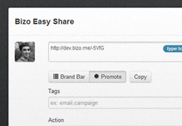
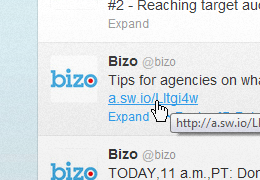
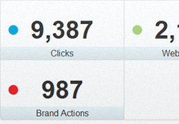

<div class="row-fluid">
  <div class="span9">
  <!--Limited content area to span9 for readability - shorter paragraph width-->
  
    <h1 class="section-header">Social Marketing</h1>
    
    <div class="row-fluid">
      <div class="span3">
        <a href="easy_share.html" class="thumbnail"></a>
      </div>
      <div class="span9">
      <h3>Easy Share</h3>
        <p><strong>One-click sharing straight from your browser.</strong> You can shorten and share a SmartLink to 
        any web page while using all the benefits of SmartLinks and to stay engaged with your audience. 
        The Easy Share bookmarklet also allows you to schedule shares to go out at a later time.</p>
        <a class="btn btn-primary" href="easy_share.html">Connect your Twitter account</a>
      </div>
    </div>
    <hr />
    <div class="row-fluid">
      <div class="span3">
        <a href="#" class="thumbnail"></a>
      </div>
      <div class="span9">
      <h3>SmartLinks</h3>
        <p>A SmartLink is a shortened URL that packs powerful features. Insert these links in your 
        tweets, emails, blog posts, Facebook posts and anywhere else you might share content. The SmartLinks report will 
        show you which of your shares resonated the most with your audience. You can track the impact of 
        your social marketing efforts down to the individual share to drive the best results.</p>
      </div>
    </div>
    <hr />
    <div class="row-fluid">
      <div class="span3">
        <a href="#" class="thumbnail"></a>
      </div>
      <div class="span9">
      <h3>Analytics</h3>
        <p>Track the performance of each piece of content you share across all channels. Identify which shares resulted in 
        the highest levels of engagement. Use that knowledge to refine your social marketing content strategy.</p>
        <ul>
          <li><strong>Tagging:</strong> Tags offer a new way to categorize and group together similar shared content and relevant performance data.</li>
          <li><strong>Conversion Tracking:</strong> By tracking <a href="section_page_audience_management.html">actions</a> that visitors complete 
          on your website you'll know which of your shares bring you business. You can see how many 'conversions' resulted from people clicking 
          on your shares. For example, if you want to track how many of your whitepapers get downloaded as a result of a specific 
          share, you may want to create an action that counts visits to the download confirmation page.</li>
        </ul>
        <h4><a href="#">Set up actions</a></h4>
      </div>
    </div>

    <hr />
    <div class="row-fluid">
      <div class="contentbox">
        <div class="contentbox-header">
          <h2>Getting started with Social Marketing</h2>
        </div>
        <div class="contentbox-body">
          <ol>
            <li><a href="easy_share.html">Connect your Twitter account</a> then install Easy Share bookmarklet and start sharing SmartLinks 
            with your audience.</li>
            <li>Create a <a href="section_page_retargeting.html">Social Retargeting</a> campaign to target your social audience.</li>
          </ol>
        </div>
      </div>
    </div>
    
  </div>
</div>
